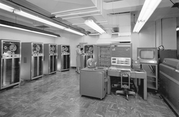
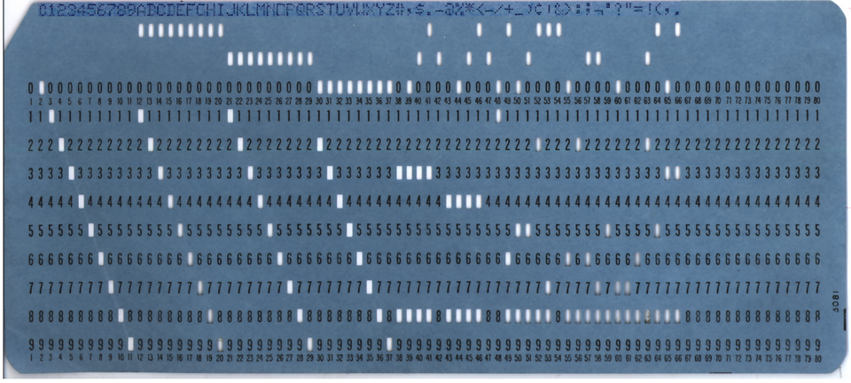
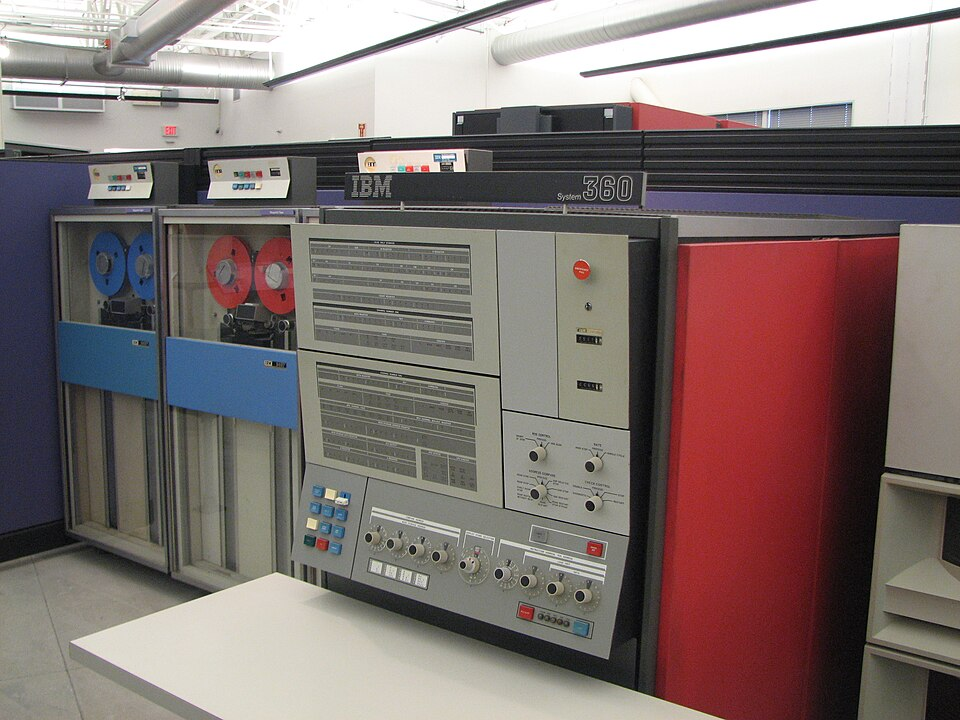
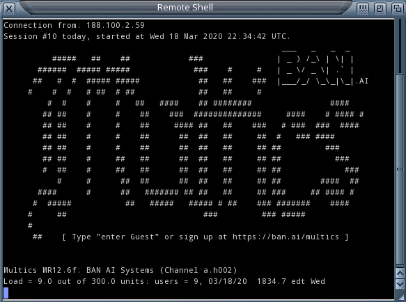
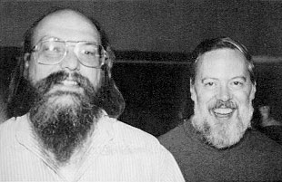
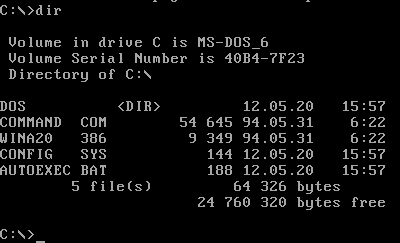
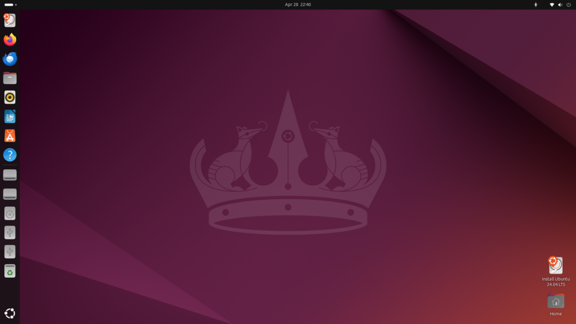
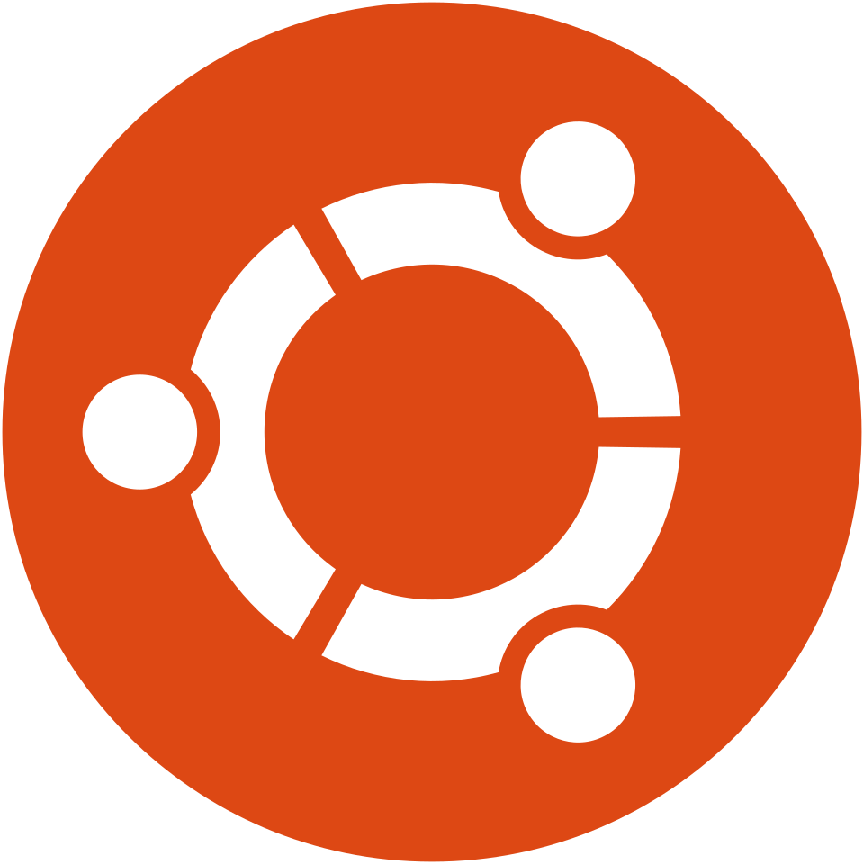

Занятие 2 · 2 академических часа
История, назначение
и функции ОС.
Виды операционных систем
Операционная система рассматривается как программа, управляющая процессором, памятью и устройствами. Функции системы разбираются в порядке их исторического появления: каждая из них возникла как решение конкретной технической задачи.
Машинный зал · конец 1950-х
Простой оборудования между задачами: постановка проблемы
Вычисление занимало три минуты, подготовка следующего задания — сорок. Разрешением этого противоречия стала программа, принявшая на себя функции оператора.
Инженер передавал колоду перфокарт оператору. Оператор вручную устанавливал ленту с компилятором, загружал колоду, дожидался печати результата и готовил следующее задание. В интервале между двумя вычислениями процессор не выполнял полезной работы.
Стоимость часа машинного времени была сопоставима с месячным окладом инженера, тогда как полезная нагрузка составляла несколько минут этого часа. Основная часть затрат приходилась на простой оборудования.
Требовалось передать смену заданий самой машине. Решением стала программа, постоянно находящаяся в оперативной памяти и управляющая последовательностью вычислений. Эта программа и получила название операционной системы.

Структура занятия · четыре раздела
Структура темы: четыре вопроса занятия
Уровневая модель, два режима работы процессора, механизм системного вызова.
Шесть этапов развития: пакетная обработка, мультипрограммирование, разделение времени, UNIX, персональные компьютеры, мобильные системы.
Управление процессами, памятью, файлами, устройствами, доступом и интерфейсом; демонстрация работы планировщика.
Классификация собственной системы и обзор семейств: Windows, Linux, macOS, BSD, мобильные системы.
Определение · три части
Определение операционной системы
Операционная система — комплекс программ, который управляет ресурсами компьютера и предоставляет их прикладным программам через единый интерфейс.
Совокупность исполняемого кода и данных, загружаемая в оперативную память при включении компьютера и остающаяся в ней до завершения работы.
Прикладная программа не обращается к накопителю напрямую: она передаёт запрос операционной системе, которая определяет порядок и способ его выполнения.
Процессор, память, накопитель и сеть распределяются между десятками программ одновременно; ошибка в одной программе не должна нарушать работу остальных.
Модель · уровни вычислительной системы
Уровневая модель вычислительной системы
Ввод с клавиатуры и мыши, окна, файлы, команды терминала.
получает результатВыполняются в пользовательском режиме и не имеют прямого доступа к устройствам.
запрашивают ресурсыПринимает запросы, упорядочивает их, распределяет процессорное время и память, обращается к устройствам.
распределяетВыполняет машинные инструкции. Понятий файла, окна и пользователя на этом уровне не существует.
исполняетНазначение · две функции одной программы
Две функции операционной системы: расширенная машина и распределитель ресурсов
Вместо управления позиционированием головки и нумерацией секторов прикладная программа выполняет вызов open("data.txt"). Накопитель представлен абстракцией файла, сетевой адаптер — абстракцией сокета.
Процессор один, число программ — десятки. Операционная система определяет, какой процесс выполняется, какие ожидают, какой объём памяти выделяется каждому и в каком порядке обслуживаются запросы к накопителю.
Вычислительная система без операционной системы
Задачи, которые решает прикладная программа при отсутствии операционной системы
print("Привет").Ресурсы · объекты распределения
Ресурсы вычислительной системы, распределяемые операционной системой
Одно ядро в каждый момент выполняет одну последовательность инструкций. Остальные процессы находятся в очереди.
Память выделяется страницами. Обращение процесса к странице, выделенной другому процессу, должно быть исключено.
Распределяется через файлы, права доступа, квоты и очередь запросов к устройству.
Устройство обслуживает один запрос одновременно, тогда как число обращающихся программ больше.
Распределяется через порты, сокеты, полосу пропускания и правила фильтрации.
Список процессов и показатели загрузки — отчёт операционной системы о распределении первых двух ресурсов из перечисленных.
Механизм · граница режимов
Механизм системного вызова и режимы работы процессора
Процессор работает в двух режимах. В пользовательском режиме доступна ограниченная часть машинных инструкций, в привилегированном — полный набор. Прикладной код выполняется в пользовательском режиме, ядро — в привилегированном; переход между режимами выполняется единственным способом.
Код готовит аргументы: дескриптор файла, адрес буфера, число байтов.
Управление передаётся по фиксированному адресу, режим переключается на привилегированный.
Ядро проверяет, открыт ли файл на запись, копирует данные из буфера программы и передаёт запрос драйверу.
Режим переключается обратно, программа продолжает со следующей строки.
Часть 2 · история
Историческое развитие
операционных систем
Раздел содержит шесть этапов развития. Каждый рассматривается по единой схеме: техническая проблема, предложенное решение и его цена. Такой порядок показывает, что перечень функций операционной системы сложился как результат последовательного решения этих проблем.
Нулевое поколение
1945–1955Вычислительные машины 1945–1955 годов: работа без операционной системы
Расчёт баллистических таблиц. Программа задавалась переключателями и коммутационными панелями: соединение блоков машины выполнялось проводами вручную.
Отсутствовало. Одна программа занимала машину целиком — процессор, память и устройства — и содержала весь код взаимодействия с оборудованием.
Смена задачи занимала часы или дни. Программа была неотделима от конкретной машины и не поддавалась переносу.

Первое поколение · пакетная обработка
1956Системы пакетной обработки заданий
В интервале между двумя расчётами машина простаивала: оператор менял ленты, готовил колоды перфокарт и снимал распечатки.
Система GM-NAA I/O, написанная в General Motors и North American Aviation для IBM 704, постоянно оставалась в памяти и сама запускала следующую задачу из пакета, как только заканчивалась предыдущая. Задачи заранее собирали в один пакет — отсюда и название пакетной обработки.
Обратная связь отсутствовала: ошибка в программе обнаруживалась через несколько часов, а иногда на следующий день, поскольку пакет уже был поставлен в очередь.

Второе поколение · простой процессора
1960-еМультипрограммирование как способ загрузки процессора
Программа считывает данные с ленты, выполняет вычисления, выводит результат на печать. На операциях ввода-вывода процессор простаивает: устройства медленнее его на несколько порядков.
При переходе первой программы в состояние ожидания ввода-вывода операционная система передаёт процессор второй программе. Такой режим работы называется мультипрограммированием.
При размещении в памяти нескольких программ запись одной программы в область другой должна быть исключена. Для этого введены аппаратные границы областей памяти.
Часть машинных инструкций стала доступна только ядру: иначе прикладная программа могла бы отключить защиту памяти.
Потребовалось правило выбора очередной программы из числа готовых к выполнению.
Третье поколение · семейство машин
1964–1966Семейство IBM System/360 и операционная система OS/360
Производитель выпускал несколько несовместимых линий машин. Программу, разработанную для одной модели, требовалось переписывать для другой вместе со всем системным программным обеспечением.
Линейка совместимых машин разной мощности с общим набором команд и общей операционной системой OS/360. Код, написанный для младшей модели, выполнялся на старшей.
Система, рассчитанная на машины разной производительности и различные режимы применения, достигла объёма в миллионы строк кода. Управление такой разработкой стало самостоятельной инженерной проблемой, описанной Фредериком Бруксом в книге «Мифический человеко-месяц».

Разделение времени · индивидуальный терминал
1961–1969Системы разделения времени: CTSS и Multics
Пакетная обработка обеспечивала загрузку машины, но исключала интерактивную работу: исправление опечатки требовало ожидания следующего прогона.
Разделение времени: процессор предоставляется каждому пользователю короткими интервалами в порядке очереди. Частота переключений такова, что для пользователя терминала машина выглядит выделенной ему одному. Система CTSS запущена в MIT в 1961 году, вслед за ней начат проект Multics.
Multics проектировался как система масштаба городской вычислительной службы и оказался чрезмерно сложным. Часть участников проекта перешла к разработке более компактной системы, из которой развился UNIX.

UNIX · переносимая система
1969–1973Система UNIX и переносимость операционной системы
Операционные системы разрабатывались на языке ассемблера конкретной машины. Перенос такой системы на другую архитектуру означал её разработку заново.
Разработка UNIX начата в Bell Labs в 1969 году; в 1973 году ядро системы переписано на языке C. Машинно-зависимой осталась небольшая часть кода, остальное компилировалось под новую архитектуру.
Принцип «всё есть файл», набор небольших утилит вместо одной универсальной программы, конвейер и права доступа к файлам. Эти решения применяются в Ubuntu и рассматриваются на последующих занятиях.

Четвёртое поколение · персональные компьютеры
1981MS-DOS и операционные системы персональных компьютеров
Компьютер стал персональным: одна машина рассчитана на одного пользователя. Задача разделения процессора между пользователями перестала быть актуальной.
Простая система с командной строкой и файловой системой FAT. Программа получала машину в единоличное распоряжение и обращалась к оборудованию напрямую.
Защита памяти и разграничение прав отсутствовали: сбой одной программы приводил к отказу всей системы, а любая программа могла повредить любой файл. Механизмы защиты пришлось вводить заново в следующем поколении систем.


C:\), разделение элементов пути обратной косой чертой, определение типа файла по расширению. Команды dir, copy и cd обрабатывала оболочка — отдельная программа, не входящая в состав ядра.Графический интерфейс
1984Графический интерфейс пользователя: Apple Macintosh, 1984 год
Работа с командной строкой требует знания имён команд и их параметров. Для пользователя, решающего прикладные задачи, это самостоятельный барьер освоения.
Графический интерфейс: окна, значки, меню и указатель мыши. Основные идеи разработаны в исследовательском центре Xerox PARC в 1970-е годы. Apple Lisa выпущена в 1983 году, Macintosh — в 1984 году; последний получил массовое распространение.
Графическая оболочка потребовала дополнительных объёмов памяти и процессорного времени, а последовательность действий стала хуже воспроизводимой: команда записывается в сценарий, перемещение указателя — нет. По этой причине командный интерфейс сохранился.

Открытый исходный код · 1991
Ядро Linux и модель открытой разработки
I'm doing a (free) operating system (just a hobby, won't be big and professional like gnu) for 386(486) AT clones.Линус Торвальдс, письмо в конференцию comp.os.minix, 25 августа 1991
«Я делаю (бесплатную) операционную систему — просто хобби, ничего большого и профессионального вроде gnu — для клонов AT на 386 и 486».
Дальнейшее развитие: исходный код был открыт, и в разработку включились сторонние участники. С версии 0.12 ядро распространяется по лицензии GPL. В настоящее время оно применяется в серверах, мобильных устройствах на Android, сетевом оборудовании и большинстве суперкомпьютеров.

uname -r выводит версию ядра, а lsb_release -a — версию дистрибутива Ubuntu; это разные номера.Итог раздела · восемь этапов
Хронология развития операционных систем: восемь этапов
Очередь заданий 1956 года и планировщик Ubuntu 24.04 решают одну и ту же задачу различными способами.
Мейнфреймы получили защиту памяти в 1960-е годы; персональные компьютеры утратили её и восстановили к середине 1990-х.
macOS основана на BSD и Mach, Android работает на ядре Linux, Windows — на ядре линии NT, выпущенном в 1993 году.
Часть 3 · функции
Размещение функций операционной системы по уровням модели
Браузер, текстовый редактор, программа пользователя.
пользовательский режимКаждая функция рассматривается отдельно: решаемая задача и способ её наблюдения в работающей системе.
привилегированный режимИнтерпретатор команд bash, графическая среда GNOME, системные службы. Входят в состав операционной системы, но выполняются в пользовательском режиме.
Прямое обращение к этим компонентам выполняют только драйверы в составе ядра.
исполняетФункция 1 · управление процессами
Процесс и его состояния
Процесс — это запущенная программа со своей областью памяти и собственным состоянием. В каждый момент времени процесс находится в одном из трёх состояний.
Все условия выполнения соблюдены, не выделено только процессорное время. Процесс находится в очереди планировщика.
Процессор выполняет инструкции данного процесса. На одно ядро приходится один такой процесс.
Процесс запросил данные с накопителя или из сети. До получения ответа процессорное время ему не требуется.
S вывода команды ps aux: R — выполняется или готов, S — ожидает события, D — ожидает ответа устройства. Подробно рассматривается в теме «Модель процесса».Демонстрация · одно ядро, три процесса
Диспетчеризация процессов на одном процессорном ядре
Запись прогона показывает порядок предоставления процессорного времени трём процессам. Для воспроизведения используется кнопка «Запустить».
Функция 2 · управление памятью
Управление оперативной памятью: виртуальные адреса и страницы
Программа обращается к адресу, отсчёт которого для неё начинается с нуля. Физическое размещение данных процессу неизвестно.
Ядро хранит соответствие «виртуальная страница → физическая», перевод выполняет отдельный блок процессора. На x86-64 страница обычно занимает 4 КБ.
Чтение страницы, выделенной другому процессу, невозможно. Редко используемые страницы вытесняются системой на накопитель, что освобождает оперативную память.
Функция 3 · файловая система
Файловая система: организация данных на накопителе
Накопитель хранит нумерованные блоки. Каталоги, имена файлов, время изменения и права доступа существуют как структуры, которые создаёт и поддерживает операционная система.
LINUX · ОДНО ДЕРЕВО ОТ КОРНЯ /
/ ├── bin исполняемые программы ├── etc файлы настроек ├── home │ └── student личные файлы ├── var │ └── log журналы системы └── dev устройства как файлы
WINDOWS · ОТДЕЛЬНОЕ ДЕРЕВО НА КАЖДОМ ТОМЕ
C:\
├── Windows системные файлы
├── Program Files программы
└── Users
└── student личные файлы
D:\ второй том — свой кореньВ ext4 эти сведения лежат в структуре inode, отдельно от содержимого файла.
Различаются предельным размером тома и файла, наличием журналирования и поддержкой прав доступа. FAT32 права доступа не хранит, что и определило её применение на сменных носителях.
ls / и df -hTПервая команда выводит каталоги корневого уровня, вторая — разделы и типы файловых систем, на которых они размещены.
Функция 4 · устройства и драйверы
Управление устройствами ввода-вывода и драйверы
Выполняется в составе ядра и преобразует обобщённые команды системы в обращения к регистрам устройства.
В Linux устройства представлены файлами каталога /dev: запись в такой файл преобразуется в обращение к оборудованию.
Ожидание процессором завершения операции не требуется: устройство само сообщает о готовности, после чего ядро выводит процесс из состояния ожидания.
Гостевая Ubuntu обращается к обычному контроллеру накопителя, а гипервизор преобразует эти обращения в операции с файлом .vdi на хостовой машине.
Драйвер выполняется в привилегированном режиме, поэтому его сбой является сбоем ядра, а не отдельной прикладной программы.
Функция 5 · пользователи, права и защита
Учётные записи, права доступа и защита данных
Права проверяет ядро при каждом обращении к файлу или устройству, а не прикладная программа при запуске. Поэтому ограничение нельзя обойти, изменив саму программу.
| Механизм | Что ограничивает | Где увидеть в Ubuntu |
|---|---|---|
| Учётная запись | От чьего имени работает процесс: у каждого пользователя свой числовой идентификатор | id, whoami |
| Права на файл | Чтение, запись и запуск отдельно для владельца, группы и остальных | ls -l — строка вида -rw-r--r-- |
| Суперпользователь | Учётная запись root не подлежит проверке прав. Повседневная работа под ней не рекомендуется, поскольку любая ошибка выполняется без ограничений | sudo команда |
| Изоляция процессов | Обращение процесса к памяти другого процесса невозможно | Ошибка «Segmentation fault» при выходе за границы выделенной памяти |
sudo требует предварительной проверки. Ядро подтверждает права и выполняет запрошенное действие, включая удаление данных, если полномочий для этого достаточно.Функция 6 · интерфейс пользователя
Интерфейс пользователя: командная строка и графическая среда

- ГРАФИЧЕСКИЙ ИНТЕРФЕЙСДоступные действия представлены на экране, запоминание команд не требуется. Последовательность из двадцати операций указателем не сохраняется и не воспроизводится автоматически.
- КОМАНДНАЯ СТРОКАТребует знания имён команд, но каждая команда представляет собой текст. Строка
mkdir -p проект/отчёты && cp *.md проект/отчёты/сохраняется в сценарии, помещается в репозиторий и воспроизводится на другой машине без изменений. - СЕРВЕРНЫЕ УСТАНОВКИСистему устанавливают без графической среды: она расходует память и процессорное время на интерфейс, который не используется.
- ОБОЛОЧКА КАК ПРОГРАММАТерминал и графическая среда выполняются в пользовательском режиме и обращаются к ядру теми же системными вызовами, что и прикладные программы.
Смежные вопросы темы
Загрузка операционной системы и системный журнал
Проверяет оборудование и находит загрузчик на диске.
В Ubuntu используется GRUB: отображает меню и помещает образ ядра в оперативную память.
Инициализирует память и устройства, монтирует корневую файловую систему.
systemd запускает службы и доводит систему до экрана входа.
Фиксируются входы пользователей, отказы служб, отключения устройств ядром. В Ubuntu журнал читается командой journalctl.
Последовательность загрузки рассматривается подробно и наблюдается в учебной виртуальной машине. Модель процесса — тема 4.
Часть 4 · классификация
Классификация
операционных систем
Операционная система характеризуется одновременно по нескольким независимым признакам. Windows 11 является многозадачной, многопользовательской по своим возможностям, настольной, с комбинированным интерфейсом, не относящейся к системам реального времени и проприетарной. Далее рассматривается каждый признак; в конце раздела выполняется классификация собственной системы.
Признаки 1 и 2 · задачи и пользователи
Классификация по числу задач и числу пользователей
| Признак | Значения | Способ проверки | Пример |
|---|---|---|---|
| Число задач | Однозадачная — в памяти находится одна программа. Многозадачная — процессор поочерёдно обслуживает несколько процессов | Диспетчер задач или команда ps aux: наличие более одного процесса указывает на многозадачность | MS-DOS однозадачная, Windows и Linux многозадачные |
| Число пользователей | Однопользовательская — предусмотрена одна учётная запись. Многопользовательская — несколько учётных записей с разграничением прав и файлов | Команда cat /etc/passwd в Linux, раздел «Учётные записи» в параметрах Windows | MS-DOS однопользовательская, UNIX многопользовательская с момента создания |
Признаки независимы. Windows 95 была многозадачной, но разграничения данных между пользователями не обеспечивала.
При кооперативной многозадачности программа передаёт управление добровольно и может не сделать этого вовсе. При вытесняющей процессор изымается операционной системой по сигналу таймера; такой режим применяется в современных системах.
Признак 3 · назначение
Классификация по назначению системы
Оптимизируется время отклика на действия пользователя. Включает графическую среду, подсистему звука, драйверы печатающих устройств и камер.
Оптимизируются непрерывность работы служб и пропускная способность. Графическая среда обычно отсутствует, обновления выполняются по плану.
Оптимизируется энергопотребление. Фоновая активность ограничивается, приложения изолируются, доступ к камере, геопозиции и файлам выдаётся по разрешениям.
Работает при малом объёме памяти, часто без дисплея и клавиатуры, обновляется редко. Применяются сокращённые сборки Linux или специализированные системы.
Обеспечивается гарантированное время реакции. Рассматривается на следующем экране.
На платах класса Raspberry Pi работает обычный дистрибутив Linux. Одно и то же ядро применяется и в серверах, и во встраиваемых устройствах.
Признак 3 · отдельный случай
Операционные системы реального времени
Система реального времени характеризуется не скоростью ответа, а гарантией того, что ответ будет получен в назначенный срок.
Блок управления двигателем формирует сигнал зажигания в заданный момент. Ответ через 12 миллисекунд вместо 10 считается не замедлением, а ошибкой работы системы.
При задержке пакета видеосвязь сохраняется: ухудшается изображение, но соединение не разрывается.
Нормируется не среднее, а максимальное время реакции, значение которого должно быть обосновано.
Объём работы, выполняемой за единицу времени, ниже, чем у системы общего назначения. Это результат сознательного проектного выбора.
Windows и Linux оптимизируют среднее время отклика. Фоновая задача способна задержать выполнение процесса на сотни миллисекунд, и средств запретить это в системе не предусмотрено.
Признаки 4, 5 и 6
Классификация по интерфейсу, разрядности и типу лицензии
Большинство современных систем относится к комбинированным: Ubuntu включает графическую среду GNOME и терминал, Windows — графическую оболочку и PowerShell.
Определяет предельный объём адресуемой памяти и требует соответствующей сборки прикладных программ. Разрядность системы должна соответствовать архитектуре процессора; этот вопрос рассматривался при выборе ISO-образа в практической работе № 1.
Открытая лицензия предоставляет доступ к исходному коду с правом его изменения и распространения, проприетарная таких прав не даёт. Windows и macOS распространяются по проприетарным лицензиям, Ubuntu и Debian — по открытым.
Архитектура · три подхода
Архитектура ядра: монолитное ядро, микроядро, гибридное ядро
ПОДХОД 1
Монолитное ядроОбращение внутри ядра выполняется как обычный вызов функции, что обеспечивает высокое быстродействие. Ошибка драйвера приводит к отказу системы. По такой схеме построен Linux.
ПОДХОД 2
МикроядроОтказавшая служба перезапускается без перезагрузки системы. Цена решения — обмен сообщениями вместо прямых вызовов функций. По такой схеме построены QNX и MINIX 3.
ПОДХОД 3
Гибридное ядроПромежуточное решение между быстродействием и отказоустойчивостью. К этому типу относят ядро Windows NT и ядро XNU в macOS.
Семейства систем
Современные семейства операционных систем
Настольные и серверные редакции одной линии. Гибридное ядро, файловая система NTFS, проприетарная лицензия.
Ядро, на основе которого формируются дистрибутивы: от серверов и рабочих станций до сетевого оборудования и мобильных устройств.
Основана на разработках BSD и Mach. Этим объясняется наличие в macOS UNIX-совместимого терминала наряду с графической средой.
FreeBSD, OpenBSD, NetBSD. Самостоятельная ветвь UNIX; часть кода BSD вошла в macOS и в сетевые подсистемы других операционных систем.
Android построен на ядре Linux, iOS — на ядре XNU, общем с macOS. Различия между настольными и мобильными системами определяются окружением, а не ядром.
Дистрибутивы Linux
Дистрибутивы Linux и их различия

UbuntuОСНОВАН НА DEBIANФиксированный график выпусков, версии LTS с длительным сроком поддержки. Используется в лабораторных работах курса.
Приоритет отдан стабильности: пакет включается в стабильный выпуск после длительной проверки. Служит основой для многих других дистрибутивов.
Новые версии компонентов включаются раньше, чем в других дистрибутивах. Служит площадкой апробации решений, впоследствии переносимых в корпоративные системы.
Система формируется пользователем из минимального набора компонентов. Обновления поступают без задержки, настройка выполняется вручную.
apt в Ubuntu и Debian, dnf в Fedora, pacman в Arch. Команды различаются, решаемая задача одна.
Фиксированные выпуски с полугодовым циклом либо непрерывное обновление. Выбор определяется соотношением актуальности версий и предсказуемости системы.
ls, cd, права доступа и структура каталогов одинаковы во всех дистрибутивах, поэтому навыки работы переносимы.
Сравнение · три настольные системы
Сравнение Windows 11, Ubuntu Desktop и macOS
| Критерий сравнения | Windows 11 | Ubuntu Desktop | macOS |
|---|---|---|---|
| Ядро | Гибридное, линия NT | Монолитное, Linux | Гибридное, XNU на основе Mach и BSD |
| Файловая система по умолчанию | NTFS | ext4 | APFS |
| Установка программ | Установщики и Microsoft Store | Менеджер пакетов apt и репозитории | App Store и перенос приложения в Applications |
| Оболочка командной строки | PowerShell и cmd | bash или zsh | zsh |
| Лицензия | Проприетарная, оплачивается | Открытая, свободно распространяется | Проприетарная, поставляется с устройством |
| Совместимость с оборудованием | Широкая | Широкая | Официально поддерживаются только компьютеры Apple |
Практическая часть · 8 минут
Практическое задание: классификация собственной операционной системы
Значение выбирается в каждом столбце, итоговая формулировка собирается ниже. Каждое значение подтверждается наблюдением на собственной системе: числом процессов, списком учётных записей, выводом команды.
Разбор · четыре типичные формулировки
Разбор типичных ошибок в определениях
bash на zsh не изменяет состав операционной системы.Вопрос на выход
Контрольный вопрос: путь запроса на запись файла
Программа записала файл на диск, хотя прямого доступа к диску у неё нет. Опишите путь этого запроса и назовите, где меняется режим работы процессора.
Полный ответ содержит четыре этапа: вызов в пользовательском режиме, переход по специальной инструкции процессора, проверка прав и работа драйвера в ядре, возврат результата с обратным переключением режима.
Дополнительный вопрос: чем такой путь дороже прямой записи в устройство и по каким причинам от него не отказываются.
Итог занятия · перечень результатов
Итоги занятия: проверяемые результаты
- Назвать уровни между прикладной программой и аппаратным обеспечением и функции каждого из нихЭКРАНЫ 05, 21
- Объяснить назначение двух режимов работы процессора на примере системного вызоваЭКРАН 09
- Соотнести три этапа развития систем с тремя функциями современной ОСЭКРАНЫ 12–20
- Разграничить понятия процесса, потока выполнения и программы на накопителеЭКРАНЫ 22, 23
- Классифицировать собственную систему по шести признакам с обоснованием каждогоЭКРАН 39
- Разграничить понятия ядра, дистрибутива и оболочкиЭКРАН 40
Домашнее задание № 2 · к следующему занятию
Максим Николаевич не хочет задавать домашнее задание. Но очень хочет
- 1Классифицировать собственную систему по шести признакам
Файл
reports/os-types.md. Для каждого признака указываются значение, обоснование и наблюдение на собственном компьютере, подтверждающее вывод. К трём признакам из шести прилагается снимок экрана. - 2Сравнить собственную систему с Ubuntu на виртуальной машине
Таблица из пяти строк: ядро, файловая система, установка программ, оболочка, лицензия. Значения для Ubuntu определяются в собственной виртуальной машине командами
uname -r,lsb_release -aиdf -hT, а не берутся из внешних источников. - 3Разобрать один этап хронологии и его последствие
Записка на 8–12 строк: исходное состояние, предложенное решение, функция современной ОС, развившаяся из него, и цена этого решения. Событие выбирается из восьми этапов хронологии.
Домашнее задание № 2 · порядок сдачи
Куда положить и как сдать
В репозитории os-linux-course: reports/os-types.md, reports/compare-ubuntu.md и снимки экрана в assets/screenshots/.
Ветка hw-02, коммиты с содержательными сообщениями, Pull Request в собственную ветку main. Слияние выполняется автором после проверки.
До начала занятия 3. Классификация без наблюдений и таблица без вывода команд не принимаются.
Шесть признаков с наблюдениями, пять строк сравнения с собственными значениями, записка об одном этапе хронологии, три снимка экрана.
Про ИИ: значения, наблюдения и вывод команд собираете сами — в этом и состоит задание, а характеристики вашего компьютера модели неизвестны. Оформление .md и редактуру формулировок можно поручить модели. Я сам так делаю всегда, поэтому и вам запрещать не буду. Содержание работы должно остаться вашим: классификацию вы будете объяснять на приёмке.